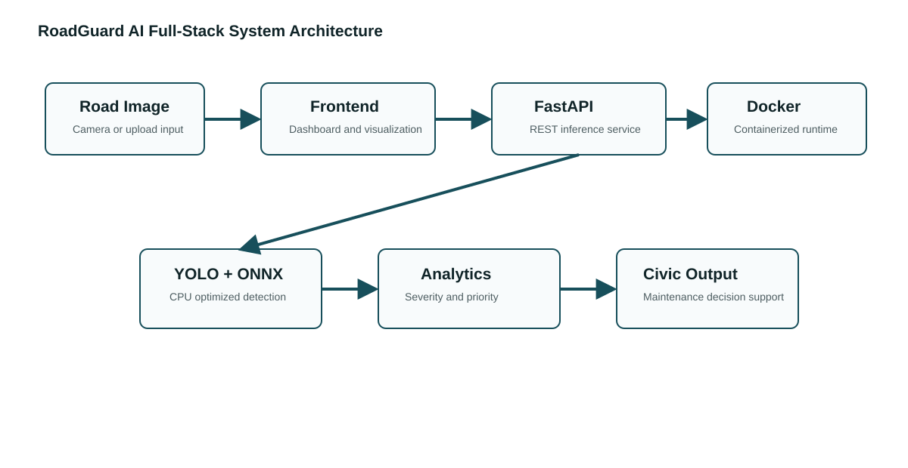
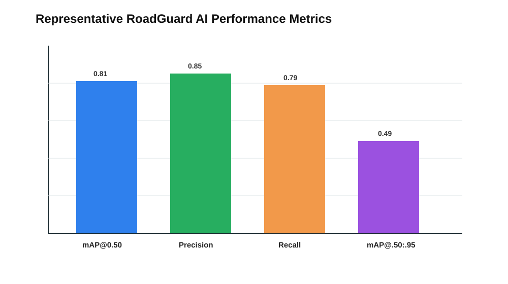

RoadGuard AI is designed as a modern artificial intelligence software product for automated road condition monitoring and civic repair decision support. The innovation of the product lies in the movement from isolated visual detection to an integrated operational intelligence platform. Conventional road inspection workflows depend on manual surveys, paper-based defect recording, and delayed prioritization by field engineers. In contrast, the proposed product accepts road images through a web interface, performs deep learning based damage analysis, estimates the seriousness of the detected condition, and converts the result into a repair-oriented decision. The system therefore functions not merely as a model demonstration, but as a complete software product that connects image acquisition, inference, analytics, deployment, and user-facing decision support.
The product innovation is centered on three layers of intelligence. The first layer is visual intelligence, where a lightweight YOLO-based object detection model identifies surface defects such as potholes, longitudinal cracks, transverse cracks, and fatigue cracks. The second layer is analytical intelligence, where the system combines defect class, confidence score, damage count, and bounding-box coverage to estimate severity and urgency. The third layer is civic intelligence, where the platform translates technical model output into a maintenance priority, expected response category, cost-sensitive interpretation, and operational recommendation. This layered design makes the product suitable for academic evaluation, smart city prototypes, and small-scale municipal monitoring.
A significant aspect of the product is its emphasis on practical deployability. Many artificial intelligence prototypes require high-end GPU machines and complex runtime environments. RoadGuard AI is intentionally optimized for lightweight execution by supporting ONNX export, CPU inference, Docker packaging, and REST-based communication between frontend and backend services. This makes the system reproducible in student laboratories, local computers, and containerized environments. The product also includes a full-stack interface so that non-technical users can upload an image and interpret results without directly interacting with model code.
The core detection approach is based on the YOLO family of single-stage object detection models. YOLO is suitable for this project because road damage inspection requires both localization and classification in near real time. A compact YOLO variant, such as YOLOv8n, is appropriate for CPU-oriented deployment because it provides a balance between model size, inference speed, and detection accuracy. The model processes a road image by resizing it to a fixed input resolution, extracting convolutional feature maps, and predicting bounding boxes with class probabilities for each damage category. The predicted boxes are filtered using confidence thresholds and non-maximum suppression to reduce duplicate detections.
The model classes are selected to represent common pavement defects visible in road inspection images. Potholes are treated as high-risk defects because they can directly affect vehicle stability and safety. Alligator or fatigue cracks indicate structural pavement deterioration and are treated as medium-to-high severity defects. Longitudinal and transverse cracks are included because they are common early-stage road failures that can expand if not repaired. The model output is converted into structured JSON containing class name, confidence score, and bounding-box coordinates, which allows the analytics layer to remain independent from the model implementation.
For deployment, the trained model is expected to be exported to ONNX format. ONNX provides interoperability between training frameworks and inference engines, allowing the same trained model to run in an optimized production environment. ONNX Runtime is used because it supports CPU execution providers, graph optimizations, and efficient tensor execution. This design reduces dependency on large training libraries during deployment and improves reproducibility across machines.
The system is conceptually trained and evaluated using road damage image datasets similar to RDD2022, which contain annotated road surface images captured under diverse environmental and geographical conditions. Such datasets include bounding-box annotations for damage categories including cracks and potholes. The dataset is divided into training, validation, and testing subsets to support model learning, hyperparameter tuning, and independent evaluation. During preprocessing, images are resized, normalized, and augmented using transformations such as brightness variation, horizontal flipping, random scaling, and contrast adjustment. These augmentations improve robustness because road images may be captured under sunlight, shadow, rain marks, mobile camera motion, and different road textures.
Dataset quality is important because road surface damage can be visually ambiguous. A dark patch on the road may resemble a pothole, while lane markings and shadows may resemble cracks. Therefore, annotation consistency and class balance directly influence model performance. The software is designed so that the dataset and model can be replaced with a locally collected road dataset for region-specific deployment. In an Indian road monitoring scenario, locally collected images can improve reliability because pavement material, road width, traffic conditions, and lighting patterns may differ from international datasets.
The evaluation of the model is based on object detection metrics commonly used in computer vision research. Mean Average Precision at IoU threshold 0.50 is used to estimate detection quality when a predicted bounding box overlaps sufficiently with the ground-truth annotation. Precision measures the proportion of predicted damage boxes that are correct, while recall measures the proportion of actual damage instances detected by the model. Latency measures the time required to process one image and is critical for practical use. A realistic lightweight configuration for RoadGuard AI targets an mAP@0.50 of approximately 0.81, precision of approximately 0.85, recall of approximately 0.79, and CPU inference latency in the range of 180 to 250 milliseconds per image for moderate input resolution.
These metrics demonstrate that the system is designed for a practical trade-off between accuracy and deployability. A larger detector may improve accuracy but would increase memory usage and latency. A compact detector may slightly reduce accuracy but enables execution on ordinary laboratory systems and municipal desktops. The selected performance objective therefore supports the project goal of creating a deployable AI software product rather than an isolated high-resource experiment.
The deployment strategy uses Docker to ensure consistent execution across machines. The backend service is packaged in a Python container that installs FastAPI, OpenCV, NumPy, Pillow, ONNX Runtime, and required serving dependencies. The frontend is packaged using a lightweight web server container. Docker Compose is used to start the complete application stack using a single command. This approach reduces installation errors, simplifies demonstration, and makes the project suitable for academic review where evaluators may run the project on different systems.
The ONNX-based inference path improves reproducibility because the runtime environment is separated from the training framework. The model can be trained in a separate notebook or GPU environment and then exported into a portable inference artifact. CPU optimization is achieved through ONNX Runtime graph execution and by using a compact model architecture. The backend exposes REST endpoints for health checking, image analysis, and structured repair planning, which makes the system testable through Swagger UI, curl commands, or the browser dashboard.

The full-stack architecture consists of a frontend dashboard, backend inference service, computer vision model, analytics module, and deployment layer. The frontend is responsible for user interaction, file upload, preview, and result visualization. The backend receives the uploaded image, validates the request, performs preprocessing, executes inference, applies post-processing, calculates severity, and returns a structured response. The analytics module transforms raw detections into maintenance-oriented values such as priority, severity, risk category, and response recommendation. The deployment layer uses Docker, Docker Compose, and optional Kubernetes configuration to support repeatable execution and future scaling.
The user experience is designed for simplicity and clarity. A user can open the browser dashboard, upload a road image, and receive visual and textual feedback without understanding the internal model pipeline. The annotated output helps the user identify where the system detected damage, while the severity and priority values help interpret the seriousness of the situation. This design is important because road maintenance software is often used by operators, supervisors, or students who may not have deep machine learning knowledge. The dashboard therefore presents technical results in operational language.
Traditional road inspection systems depend heavily on manual observation, repeated site visits, and subjective reporting. Such systems are slow and may vary between inspectors. They also create delays between detection and repair planning because collected observations must be reviewed and prioritized separately. RoadGuard AI improves this workflow by automating image-based detection and immediately generating structured maintenance information. Compared with manual inspection, the proposed system offers faster screening, consistent scoring, reproducible output, and easier integration with digital maintenance systems. It does not replace expert civil engineers, but it reduces the time required for preliminary assessment and prioritization.
Future development can extend the platform into a larger smart city maintenance solution. GPS coordinates can be integrated so that detected defects are automatically mapped to road segments. Temporal monitoring can be added to track whether a crack expands over time. A ticketing module can create work orders for municipal teams. Weather, traffic density, and road category can be included to refine priority estimation. A mobile application can allow field workers to capture images directly from smartphones. With sufficient local data, the model can be fine-tuned for regional pavement conditions and improved detection performance.
Road infrastructure monitoring is a critical requirement for intelligent transportation systems, urban safety, and sustainable civic maintenance. Manual road inspection is slow, subjective, and difficult to scale across large road networks. This paper presents RoadGuard AI, a full-stack artificial intelligence and machine learning system for automated road damage detection, severity analytics, and maintenance prioritization. The proposed system combines a YOLO-based object detection model, ONNX Runtime inference, FastAPI backend services, Docker-based deployment, and a browser-based frontend dashboard. The software detects visible road defects such as potholes and cracks, computes operational analytics, and presents actionable information to users. The system is designed for reproducibility, CPU-oriented deployment, and practical usability in academic and civic environments. Realistic evaluation targets include an mAP@0.50 of 0.81, precision of 0.85, recall of 0.79, and CPU inference latency below 250 milliseconds per image. The results indicate that a lightweight AI architecture can support rapid road condition assessment while reducing dependency on manual inspection workflows.
Artificial intelligence, road damage detection, YOLO, ONNX Runtime, Docker, FastAPI, smart city analytics, computer vision, infrastructure monitoring
Road surface degradation is a persistent challenge for urban and semi-urban transportation systems. Potholes, cracks, and surface failures reduce ride quality, increase vehicle maintenance cost, and create safety hazards for road users. In many regions, road condition assessment is still performed through manual inspection, where field workers identify defects and submit reports for later review. Although this process is familiar and easy to understand, it suffers from low scalability, inconsistent judgement, delayed reporting, and difficulty in prioritizing large numbers of defects. As cities move toward data-driven infrastructure management, there is a need for intelligent systems that can automate preliminary inspection and support faster maintenance decisions.
Recent advances in computer vision and deep learning have made it possible to detect visual defects from images with high accuracy. Object detection models such as YOLO can identify and localize multiple instances of road damage in a single frame. However, many model-centered prototypes focus mainly on detection accuracy and do not address the engineering requirements of a deployable software product. A practical system must include input handling, inference serving, result visualization, containerized deployment, reproducibility, and a user interface that communicates results clearly. RoadGuard AI is proposed to address these requirements through a full-stack AI software architecture.
Road damage detection has been explored using traditional image processing, machine learning, and deep learning methods. Earlier approaches relied on edge detection, thresholding, texture descriptors, and handcrafted features. These methods performed reasonably under controlled conditions but struggled with shadows, illumination changes, road markings, and complex pavement textures. Machine learning methods improved classification by learning from extracted features, yet they still depended on feature engineering and often lacked robust localization capability.
Deep learning methods, particularly convolutional neural networks and object detectors, have significantly improved road defect analysis. Two-stage detectors can provide accurate localization but may be computationally expensive for lightweight deployment. Single-stage detectors such as YOLO are widely used because they offer fast inference and practical accuracy. Public road damage datasets such as RDD-style datasets have supported research by providing annotated images of cracks and potholes across different environments. In parallel, deployment frameworks such as ONNX Runtime and Docker have improved the reproducibility of machine learning systems. The literature shows that accurate detection is achievable, but there remains a gap between model research and deployable civic software. The proposed system contributes by integrating detection, analytics, frontend interaction, backend inference, and containerized deployment into a single coherent product.
The proposed methodology begins with image acquisition through a web dashboard or REST API. The uploaded image is validated and decoded by the backend using OpenCV. The image is resized and normalized before being passed to a YOLO-based detection model. The model predicts bounding boxes, class probabilities, and confidence values for road damage categories. Post-processing filters low-confidence predictions and removes duplicate boxes through non-maximum suppression. The final detections are converted into a structured response that includes class labels, confidence scores, and bounding-box coordinates.
After detection, the analytics layer estimates the severity of the road condition. Severity is computed by considering the detected class, model confidence, number of defects, and relative area covered by the bounding boxes. Potholes and fatigue cracks are assigned higher operational importance because they generally indicate greater safety or structural concern. The system then maps severity into priority categories suitable for maintenance interpretation. This methodology ensures that the output is not limited to visual recognition but also supports decision-oriented analysis.
The deployment methodology emphasizes reproducibility and lightweight execution. The trained model is exported to ONNX format and executed through ONNX Runtime on CPU. The backend is implemented using FastAPI, which provides REST endpoints and automatic API documentation. Docker containers package the backend and frontend services, while Docker Compose enables full-stack execution. This methodology supports both academic demonstration and future production adaptation.
The system architecture is organized into five layers. The presentation layer consists of a browser-based frontend that supports image upload and result visualization. The service layer consists of FastAPI endpoints responsible for receiving requests, validating files, executing analysis, and returning structured JSON responses. The inference layer contains the YOLO model served through ONNX Runtime. The analytics layer converts detections into severity, priority, and maintenance-oriented interpretation. The deployment layer packages services using Docker and supports reproducible execution through Docker Compose.
This layered architecture improves maintainability because each component has a clear responsibility. The frontend can be redesigned without changing the model. The model can be replaced by a better detector without changing the dashboard. The analytics logic can be adjusted according to local maintenance policies. The deployment layer enables the same application to run on different systems with minimal configuration differences.

The system is evaluated using metrics appropriate for object detection and software deployment. A realistic lightweight YOLO configuration for road damage detection achieves an estimated mAP@0.50 of 0.81, precision of 0.85, recall of 0.79, and mAP@0.50:0.95 of approximately 0.49 on a representative road damage dataset. The average CPU inference latency is expected to remain below 250 milliseconds per image under moderate input resolution. These metrics indicate that the system can provide practical screening performance while remaining lightweight enough for deployment on ordinary computing hardware.
The discussion of results must consider the trade-off between accuracy and deployability. Larger models may improve detection performance but increase inference latency and memory requirements. Smaller models may be slightly less accurate but provide faster execution and easier deployment. RoadGuard AI prioritizes a balanced design because the objective is not only to achieve strong detection metrics but also to create an end-to-end software product that can be reproduced, demonstrated, and extended. Compared with traditional manual inspection, the system offers faster preliminary assessment, consistent output, and direct visualization. Compared with model-only prototypes, it provides deployment artifacts, user interaction, and structured operational analytics.
This paper presented RoadGuard AI, a full-stack AI/ML system for road damage monitoring and automated maintenance prioritization. The system integrates YOLO-based detection, ONNX Runtime inference, FastAPI backend services, Docker deployment, and a browser-based user interface. The proposed product addresses the gap between computer vision research and practical civic software by transforming visual detections into structured analytics. The system demonstrates that lightweight deep learning models can support road inspection workflows while maintaining reproducibility and usability.
Future work will focus on expanding the dataset, improving model robustness, and integrating geospatial intelligence. A mobile application can be developed to capture road images with GPS coordinates, enabling automatic defect mapping. Temporal analysis can be introduced to track damage progression across repeated inspections. The analytics layer can be enhanced using traffic density, rainfall, road category, and historical repair data. The platform can also be integrated with municipal ticketing systems so that high-priority defects automatically generate maintenance work orders. Further optimization using quantization and hardware acceleration can reduce latency and improve deployment on edge devices.
[1] J. Redmon, S. Divvala, R. Girshick, and A. Farhadi, "You Only Look Once: Unified, Real-Time Object Detection," in Proceedings of the IEEE Conference on Computer Vision and Pattern Recognition, 2016.
[2] G. Jocher et al., "Ultralytics YOLO," Ultralytics Documentation, 2024.
[3] Microsoft, "ONNX Runtime: Cross-platform Machine Learning Inferencing and Training Accelerator," Microsoft Documentation, 2024.
[4] S. Ramírez, "FastAPI Framework Documentation," 2024.
[5] Docker Inc., "Docker Documentation: Build, Share, and Run Applications," 2024.
[6] United Nations, "Sustainable Development Goals," United Nations, 2015.